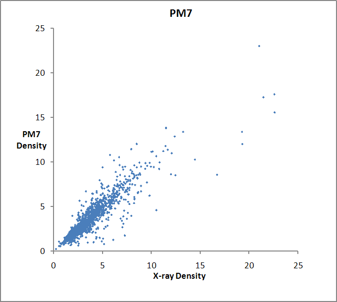
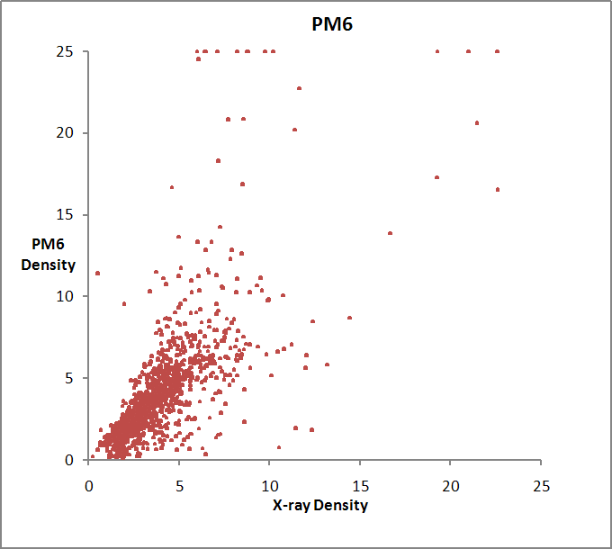

(Home - Accuracy - Manual - Individual solids)
|
 |
 |
Densities in g/cc. 2194 entries. Some values for PM6 were outside the graph boundaries; these have been reset to the boundary.
(PM6 was used here. Results for PM6-D3H4 would be similar to those for PM6.)